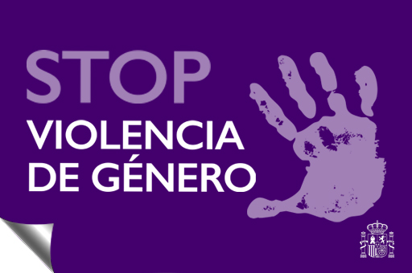

No mas silencio.
tienes derecho a vivir sin miedo
¿Sabías que la violencia doméstica NO es tu culpa? Nadie tiene derecho a controlarte, humillarte ni lastimarte. Existen recursos y ayuda disponible.

Señales de alerta:
Control sobre tus decisiones. Aislamiento social y emocional. Amenazas o violencia física.
¿Cómo puedes salir?
Busca ayuda en tu entorno de confianza. Denuncia el abuso de manera confidencial. Recuerda que tienes derecho a una vida libre de violencia.
Recursos:
Línea Nacional contra la Violencia: 112/016
"El primer paso es hablar. Hay ayuda."